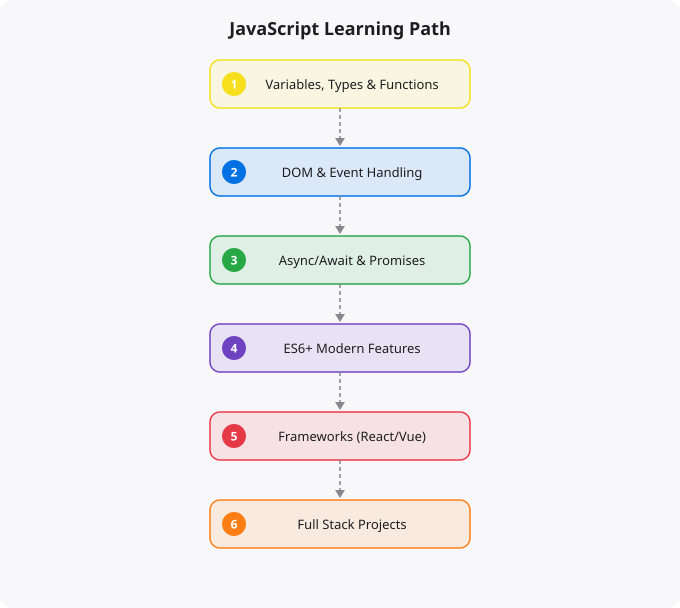

JavaScript is the only programming language that runs natively in web browsers. Every interactive web page — every button that responds to clicks, every form that validates input, every content that loads without a page refresh — uses JavaScript. And through Node.js, JavaScript also runs on servers, enabling developers to use a single language across the entire web stack. For web development, JavaScript is not one option among many. It is the foundation that everything else builds on.
This guide takes you from understanding what JavaScript is to writing professional-quality code in modern JavaScript. It covers the language itself, the browser environment, Node.js, and the ecosystem of tools and frameworks that make up professional JavaScript development.
JavaScript was created by Brendan Eich in 1995 in ten days, originally as a simple scripting language for browsers. Despite its hurried origins, it became the dominant language of the web — not through planning, but through circumstance. As the web grew, JavaScript grew with it, accumulating quirks and inconsistencies that still exist today alongside a powerful and expressive modern language that bears little resemblance to those early scripts. Modern JavaScript (ES6 and later, the standards from 2015 onward) is a capable, well-designed language with features that professional developers use to build complex, maintainable applications. Understanding the distinction between old JavaScript patterns and modern JavaScript idioms is important — much of the confusing and error-prone code you will encounter in older tutorials and codebases uses patterns that have been superseded by cleaner modern alternatives.
Variables and scoping: the difference between var, let, and const, and why you should almost always use const by default and let when you need to reassign. Understanding scope (where a variable is accessible) and closure (a function that remembers its enclosing scope) — two concepts that confuse many beginners but are essential to writing correct JavaScript. Data types: strings, numbers, booleans, null, undefined, objects, arrays, and Symbol. JavaScript's type system is dynamic and loosely typed, which provides flexibility but also creates subtle bugs for the unprepared. Learn === (strict equality) versus == (loose equality with type coercion) and always use ===. Functions: function declarations, function expressions, and arrow functions. Understanding how this behaves differently in different function types is one of JavaScript's most important (and historically most confusing) topics. Arrays and array methods: the modern functional approach to working with arrays using map, filter, reduce, forEach, find, some, every, and flat. These methods allow you to express complex data transformations clearly and concisely.
Asynchronous programming is where JavaScript's complexity level rises significantly and where many beginners get stuck. JavaScript runs in a single thread, which means it can only do one thing at a time. But web applications need to perform operations that take time — network requests, file reads, timers — without blocking the user interface. Understanding the event loop — how JavaScript handles asynchronous operations through a queue of callbacks — is the mental model that makes async JavaScript comprehensible. Promises represent a value that will be available in the future. Learning to create, chain, and handle errors with Promises is essential for working with any modern JavaScript API. async/await is syntactic sugar over Promises that makes asynchronous code read almost like synchronous code. The fetch API for making HTTP requests from the browser, handling responses, and parsing JSON. Understanding CORS (Cross-Origin Resource Sharing) and why browsers restrict cross-origin requests.
The Document Object Model (DOM) is the browser's representation of the HTML document as a tree of objects that JavaScript can read and modify. Learning to select DOM elements with querySelector and querySelectorAll, modify their content and styles, add and remove elements, and handle user events like clicks, input, and keyboard events is the foundation of interactive web programming. Event handling: addEventListener, event objects, event bubbling and capturing, and preventDefault for overriding default browser behavior. Form handling: reading input values, validating form data, preventing default form submission, and providing real-time validation feedback. Local storage and session storage for persisting data in the browser across page loads. Browser developer tools: the Console for JavaScript debugging, the Sources panel for setting breakpoints, the Network panel for inspecting HTTP requests, and the Performance panel for profiling.
Modern JavaScript development uses build tools: bundlers like Vite or Webpack that combine and optimize JavaScript files, TypeScript for static type checking that catches errors at development time, and Babel for transpiling modern JavaScript to older syntax for browser compatibility. Node.js for server-side JavaScript: the npm ecosystem of packages, building REST APIs with Express or Fastify, reading and writing files, and the Node.js module system. Frontend frameworks: React, Vue, or Angular for building complex user interfaces with component-based architecture. React is currently the most widely used — learning React (with hooks) is the most valuable investment for web frontend development. Testing with Jest for unit tests and Cypress or Playwright for end-to-end testing. Code quality tools: ESLint for linting, Prettier for formatting, and Git for version control. Professional JavaScript development is as much about this ecosystem as about the language itself.
JavaScript has several behaviors that surprise developers coming from other languages. It is dynamically typed — variables can hold any type and types can change. It uses prototype-based inheritance rather than class-based (though ES6 classes provide a cleaner syntax over the prototype system). It is single-threaded with an event loop, enabling non-blocking I/O that makes Node.js capable of handling thousands of concurrent connections. Type coercion — JavaScript's automatic conversion between types in comparisons — produces famously surprising results. Use === (strict equality) rather than == (loose equality with coercion) to avoid these surprises. Understanding closures — functions that capture variables from their enclosing scope — is essential for advanced JavaScript patterns.
JavaScript in 2025 is vastly different from the language it was in 2010. ES6 (2015) and subsequent annual releases have added classes, arrow functions, destructuring, spread syntax, template literals, promises, async/await, modules, optional chaining, and much more. TypeScript — a Microsoft-developed superset of JavaScript that adds static typing — has become the standard for professional frontend and Node.js development. React, Vue, and Angular dominate frontend framework choice, with React holding the largest market share. Next.js (built on React) and Nuxt (built on Vue) provide full-stack frameworks with server-side rendering. Node.js enables JavaScript on the server side, and Express.js or Fastify handle API development.
JavaScript's asynchronous programming model is fundamental and often confusing for beginners. Originally handled with callbacks (leading to "callback hell" in complex code), then improved with Promises (chainable .then()/.catch() syntax), and now most commonly written with async/await syntax that makes asynchronous code read like synchronous code while remaining non-blocking. Understanding why asynchronous programming is needed (the event loop, non-blocking I/O), what promises represent (eventual completion or failure), and how async/await makes it manageable is one of the most important JavaScript learning milestones. Once this clicks, a large class of previously confusing JavaScript behavior becomes understandable.
Start with core JavaScript in the browser: DOM manipulation, event handling, fetch API for HTTP requests. Build small interactive projects — a to-do list, a weather app, a quiz. Then learn modern JavaScript features thoroughly. Choose a framework: React is the most marketable choice. Build several projects with your chosen framework. Learn TypeScript — it makes large codebases significantly more maintainable. For backend interest, learn Node.js and Express or Fastify. The JavaScript ecosystem changes rapidly; focus on fundamentals and adaptability rather than memorizing any specific library's API.
Disclaimer: This article is for educational purposes only. JavaScript behavior, performance, and security vary across environments and runtimes. Always validate code and architecture before using it in production systems.
Technical skills solidify through building, not through reading. For every concept you learn, immediately apply it to a project. The gap between "I understand the theory" and "I can use this productively" is only crossed through building real things, encountering real problems, and solving them. Tutorials will only take you so far -- real learning happens when you are solving a problem the tutorial does not show you.
Phase 1 - Learn Fundamentals (follow tutorials)
- Complete at least 2 structured tutorials
- Understand core concepts and syntax
- Run and modify the tutorial examples
Phase 2 - Build Something Small (your own idea)
- Build a simple project from scratch (no tutorial)
- You will get stuck -- this is the learning
- Use documentation and Stack Overflow, not the tutorial
Phase 3 - Build Something Real (solve a real problem)
- A tool you personally would use
- Deploy it somewhere publicly accessible
- Show it in your portfolio
Phase 4 - Contribute to Open Source
- Find a project you use and understand
- Start with documentation or small bug fixes
- Progress to feature contributionsThe engineers who reach senior levels quickly have distinguishing habits: they read documentation rather than only watching tutorials (documentation is always more current and complete), they maintain a personal learning log where they record what they are building and what problems they encountered, they engage with the community around the technology they are learning, and they teach others as a way to deepen their own understanding. These habits create compounding returns -- each week builds on the previous one rather than re-learning forgotten material.
Not all learning resources are equal. For most technologies, the official documentation is the most reliable and complete source. Community resources like the Mozilla Developer Network (MDN) for web technologies are excellent. Books by practitioners (not academics writing about a language they do not use professionally) provide depth. Video courses on Udemy or Coursera provide structured progression. Practice platforms like LeetCode, HackerRank, and Exercism provide deliberate practice. The best combination: official docs for reference, one structured course for foundation, and real projects for depth.
When you can build a complete project from scratch without following a tutorial, understand the errors you encounter and know how to debug them, and can explain your code choices to another developer. Imposter syndrome makes everyone feel not ready -- the practical test is whether you can build things and solve problems, not whether you feel confident.
Go deep first. Surface knowledge in many technologies is less valuable than genuine competence in one. Learn one language to real proficiency, build multiple projects with it, then expand to related tools. A developer who truly knows Python is more valuable than one who has introductory knowledge in Python, JavaScript, Ruby, and Go.
Build something you genuinely want to exist. The most sustainable motivation comes from solving your own real problems. When learning feels abstract and purposeless, connect it to a concrete project. Accept that confusion is part of the process -- the feeling of not understanding something yet is how learning feels from the inside, not a sign that you cannot do it.
Yes. India is one of the fastest-growing tech markets globally. These skills are in high demand across startups, MNCs, and product companies in Bangalore, Hyderabad, Pune, and Mumbai.
Follow official documentation, tech blogs from practitioners, GitHub repositories, and communities like Dev.to, Hashnode, and Reddit. Avoid news that creates urgency without substance.
Official documentation first. Then practical tutorials. Then build real projects. SRJahir Tech articles are written from real production experience — bookmark the series that matches your learning goal.
Consistent daily practice for 3-6 months produces real, usable skills. The key is building projects, not just reading. Every article on SRJahir Tech includes practical examples you can implement today.
Yes. All articles on SRJahir Tech are completely free. No paywalls, no subscriptions. Quality technical education should be accessible to everyone, especially aspiring engineers in India.